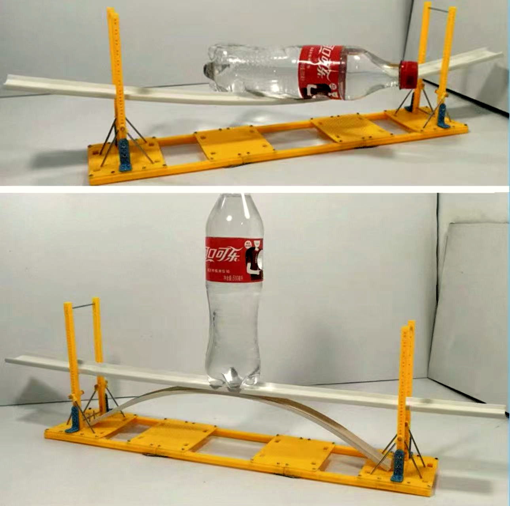
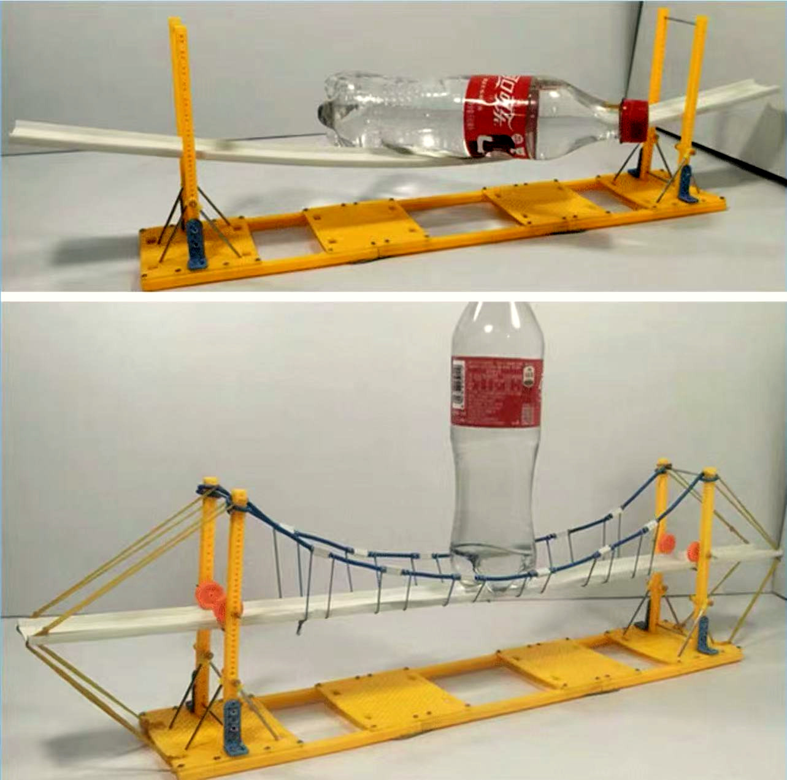
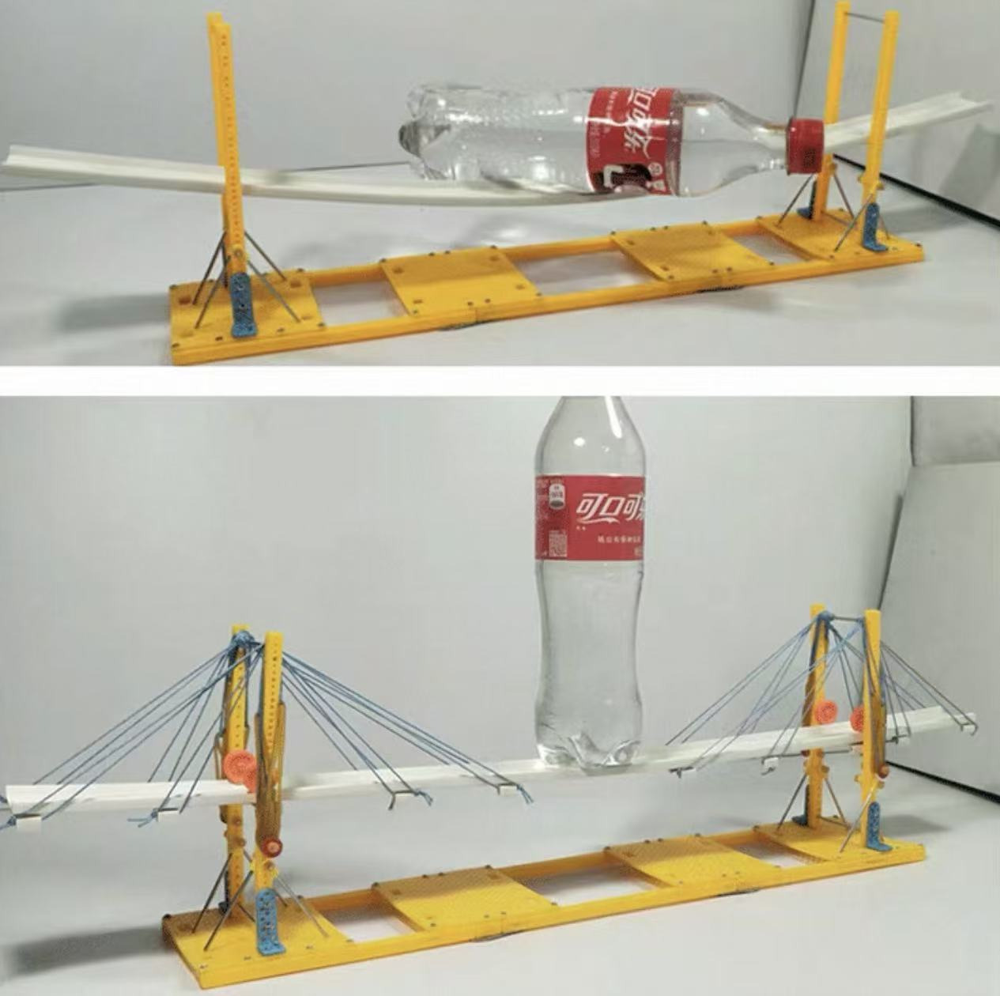

空桥放上一瓶可乐
空桥放上一瓶可乐平板桥一块板铺上去
做法一块板直接铺在两个桥墩上。
问题只放一瓶可乐，桥面中间就弯曲断裂。
发现重量全压在板自己身上，力集中在正中间，最容易弯、最容易断。
七人分工合作，搭一座跨越 30 厘米“小河” 的桥。每位组员都参与了自己想做的桥型设计与搭建。
如何搭一座跨过 30 厘米“小河” 的桥，桥面要能放稳东西、不能塌？
空桥放上一瓶可乐做法一块板直接铺在两个桥墩上。
问题只放一瓶可乐，桥面中间就弯曲断裂。
发现重量全压在板自己身上，力集中在正中间，最容易弯、最容易断。

做法在桥面下加一道弧形拱。
发现拱把重量顺着弧形传给两边桥墩，中间没那么容易断了。
新麻烦拱会往两边“推”桥墩，放重了桥墩会滑开，需要用梁加固。

做法桥塔之间拉上两根主索，再用短竖绳把桥面吊在主索下面。
发现重量经短绳 → 主索 → 桥塔和地面，桥面不再硬扛。
效果放一瓶水，弯曲比平板桥小多了。

做法每根索从桥塔顶端斜拉到桥面，像扇子骨一样撑住桥面。
发现多根斜索从不同位置拉住桥面，每个点都有索帮忙，受力更均匀。
效果放一瓶水，桥面几乎不弯。
重量全压在板上，中间没有支撑，力集中在桥面正中间 → 最容易弯、最容易断。
重量顺着弧形传给两边桥墩，但拱同时往外推 → 桥墩会被推开。
重量通过绳索传到桥塔和地面，桥面不硬扛 → 弯得最小、最结实。

平板桥拱桥
平板桥悬索桥
平板桥斜拉桥


每一次塌桥，都告诉我们下一步该改哪里。
平板受不住，
弯成拱形、加上绳索就受得住。
三根杆件一交叉，形状就不容易被压变形。
像积木一样拆开搭，坏了哪块换哪块。


 拼好后，我们组 7 人站上去试过——稳稳当当！
拼好后，我们组 7 人站上去试过——稳稳当当！前面试的桥都是一整块搭死的，接头一松，整座桥就散架。倍力桥拆成小模块，一节一节扣上去，每块模块里都有三角形结构，坏了哪节换哪节。
现场搭建的目的各位领导、老师、同学们到台前，
亲身感受我们小组搭建的倍力桥！